工具轨 × 地图控件 · 风格参考图鉴
A · 浅色地图经典（Google Maps 系）
与现行浅色工作台最接近：白卡气泡、轻柔投影、控件按角成簇，缩放竖排落右下。
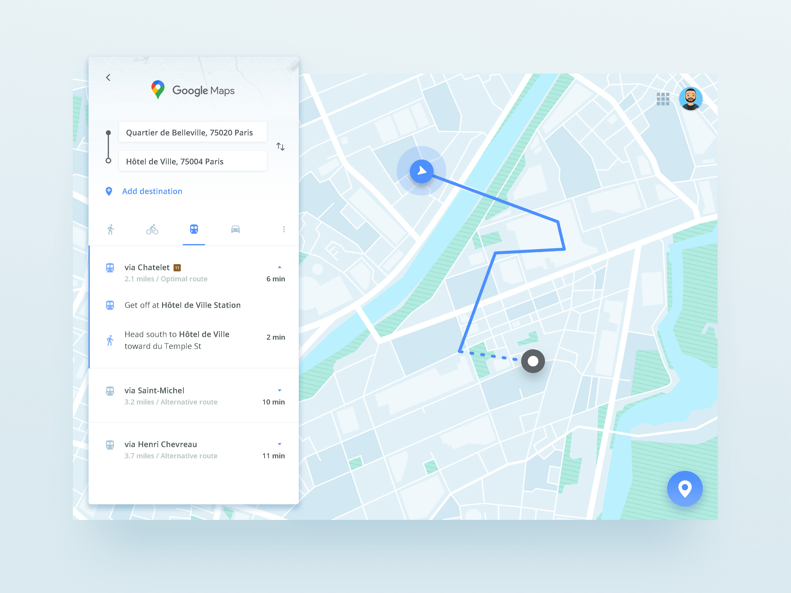
白左卡 + 右下圆形 FAB
左侧白信息卡、地图上蓝色圆形动作钮；投影轻、圆角统一，控件不与编辑器列混排。
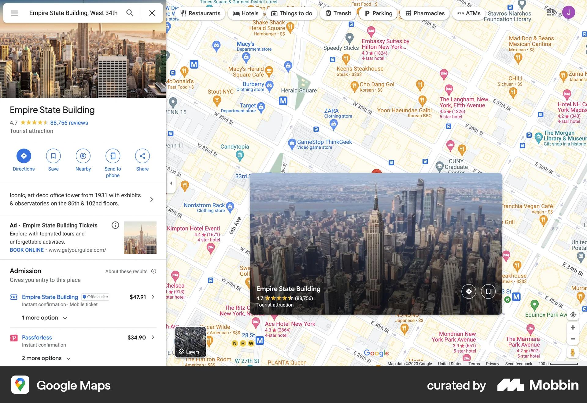
顶部胶囊 + 右下缩放竖排
分类走顶部横向胶囊；缩放 +/- 竖排白圆钮贴右下；左下信息卡。可直接对照本项目地图簇归位。

底部白胶囊工具条
动作收进一条白色圆角胶囊，分类另起白卡；线条图标、克制留白。可对应左下 2D/3D 动作簇。
B · 深色编辑器悬浮条
画布上的临时/专业工具条范式：深底圆角、白图标、首钮彩色、组间细分隔。现行浅色工作台暂不启用，可作深色模式储备。
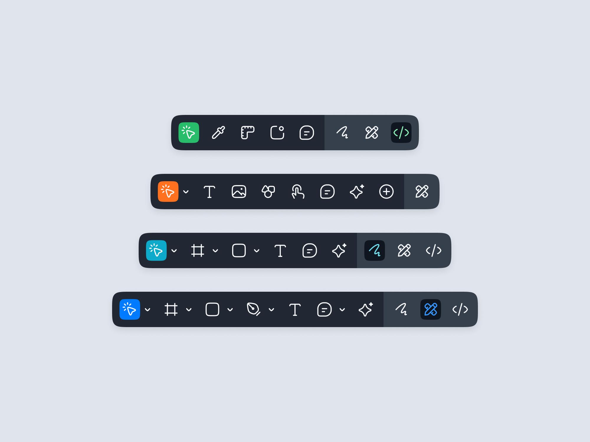
深色横条 · 彩色首钮
深一档圆角横条，首钮彩色方块，其余白描线图标；右侧再分一组深一档工具区。分组与选中首钮的表达可参考。
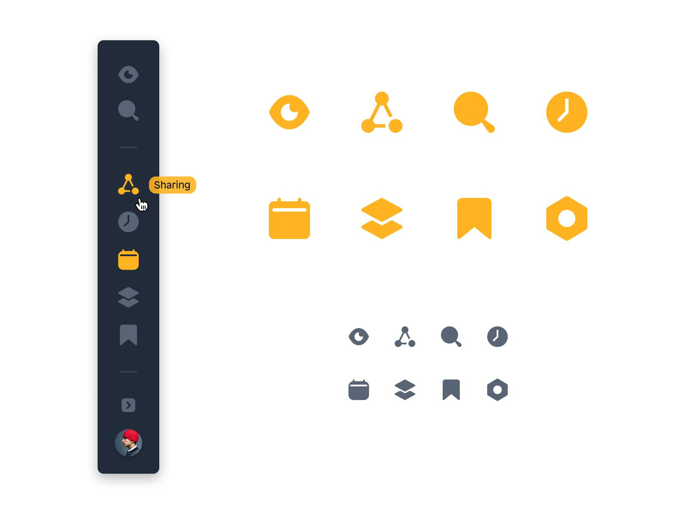
深色竖列 + 侧出 tooltip
竖排工具列，选中图标高亮橙色，右侧浮出名字气泡；头像落列底。对照本项目左右轨 tooltip 方向与落底结构。
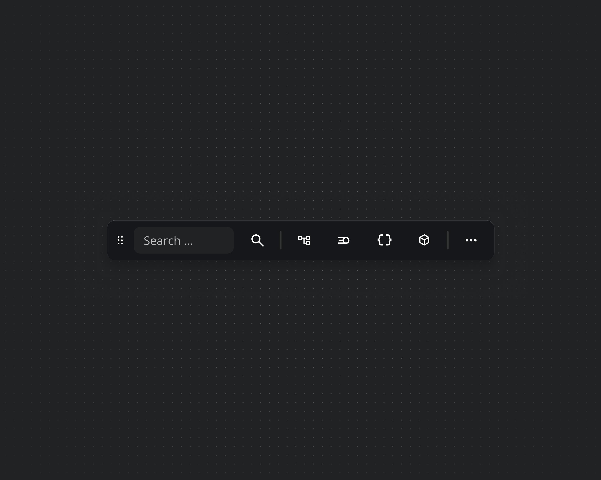
窄悬浮横条
搜索框 + 竖线分隔 + 图标 + 更多，一条窄深条悬浮在画布上；密度高、视觉安静。适合收纳低频动作。
C · 玻璃拟态地图面板
半透明 + 大圆角 + 柔和光晕，视觉强；但本项目规范是纯色 paper/plane 底 + hair 边 + E1 投影，玻璃模糊与渐变属偏离项，仅作氛围储备。
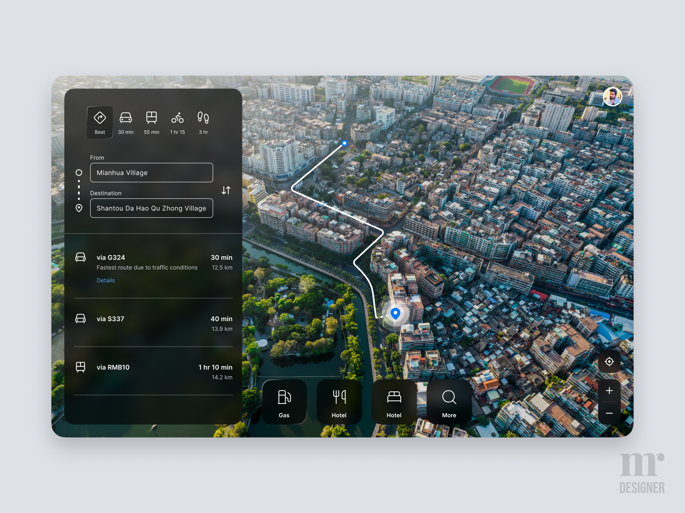
深色玻璃左卡 + 底部簇
左卡半透明毛玻璃，底部一排深色圆角动作钮，右下独立缩放；信息层级靠卡片而非描边。
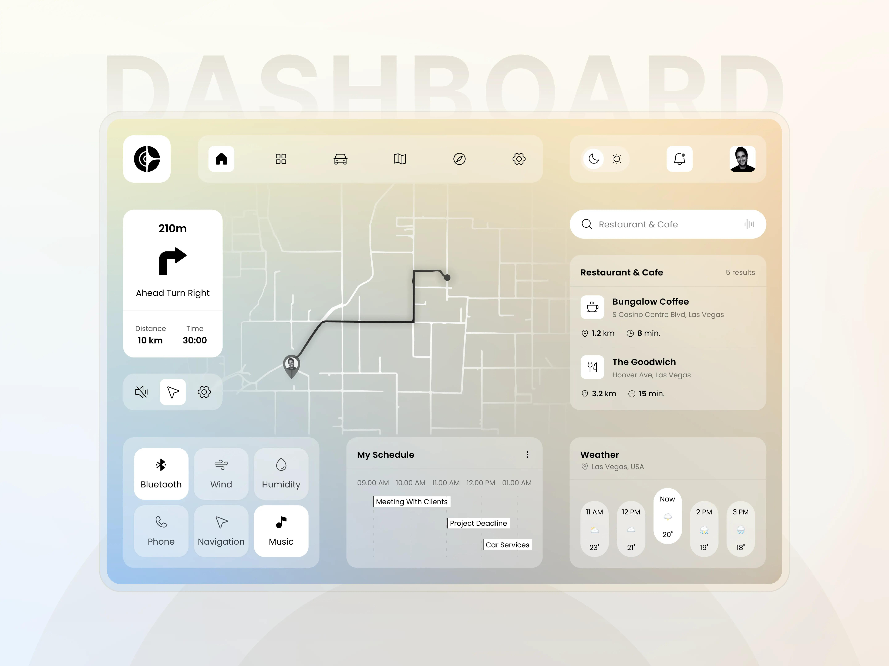
浅玻璃渐变仪表盘
浅暖色渐变底，顶部白胶囊导航、圆角工具卡；柔和轻盈。本项目底色素净，不引入渐变背景。
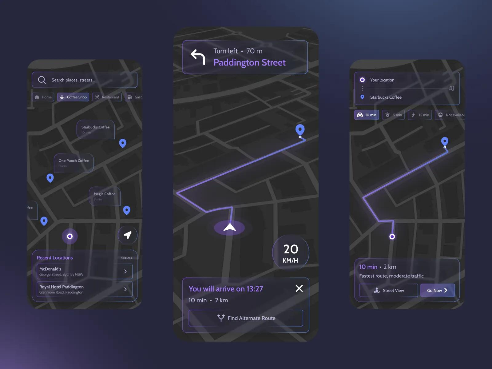
深色地图 + 紫色导航
深色底图上叠半透明导航卡，强调色走紫。若未来做深色模式可参考其卡片层级；强调色仍以品牌绿为准。
D · 浅色极简竖轨（左轨导航对照）
导航族参考：窄轨/宽轨双态、选中浅底或条带、数字与状态点角标、分组小标题与分隔线。
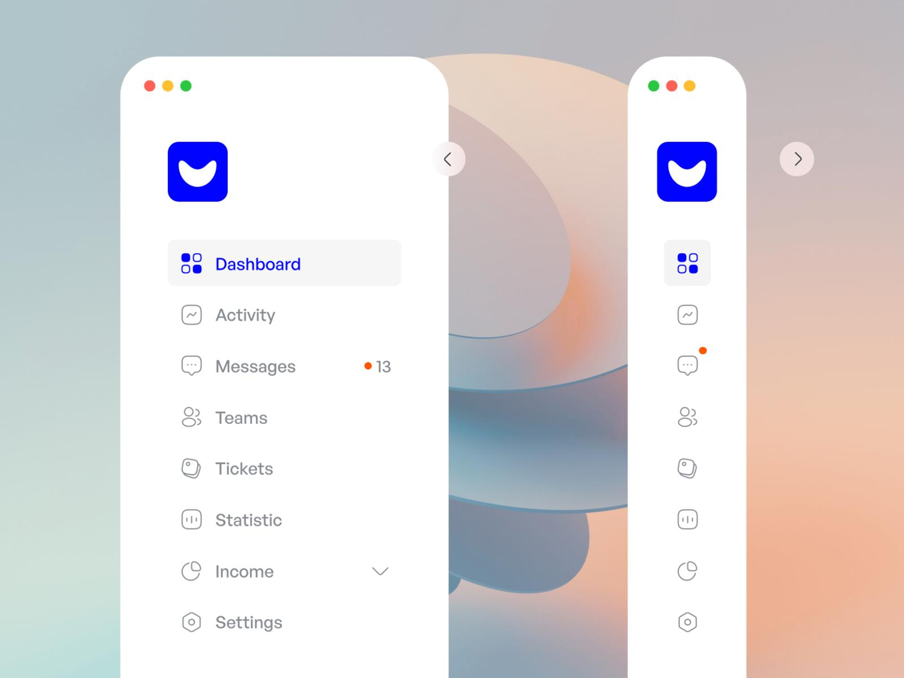
宽轨 / 窄轨双态
同一套条目展开带文字、收起只留图标；选中浅蓝底 + 蓝图标，未读红点。对照本项目左轨 64px 窄轨与展开卡。
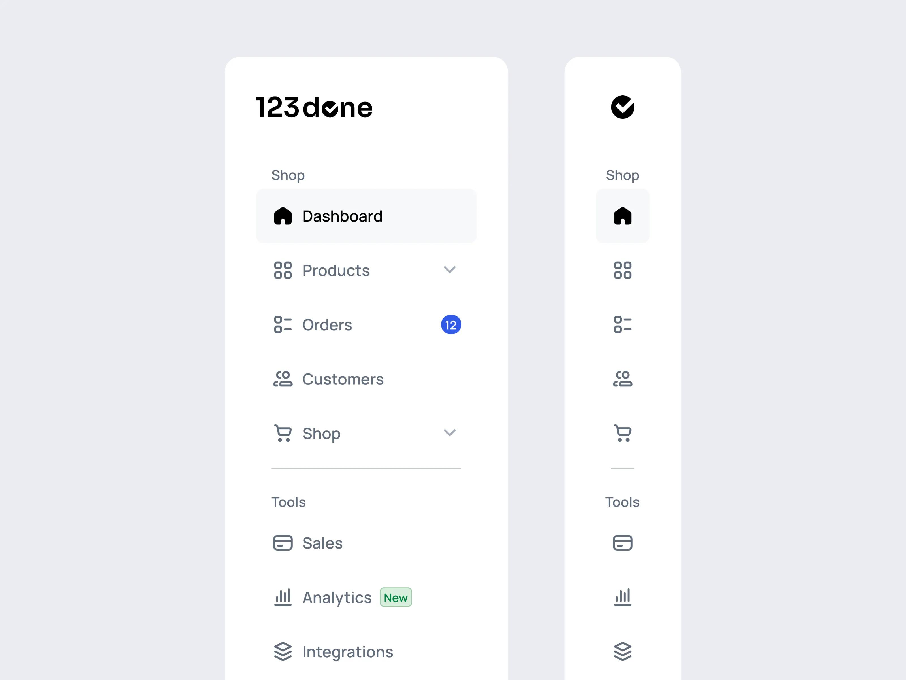
数字角标 + 分组小标题
选中浅灰底 + 黑图标，条目右侧蓝色圆数字 12；分组小标题灰字，组间细分隔。角标圆片口径可对照本项目 15px err 圆。
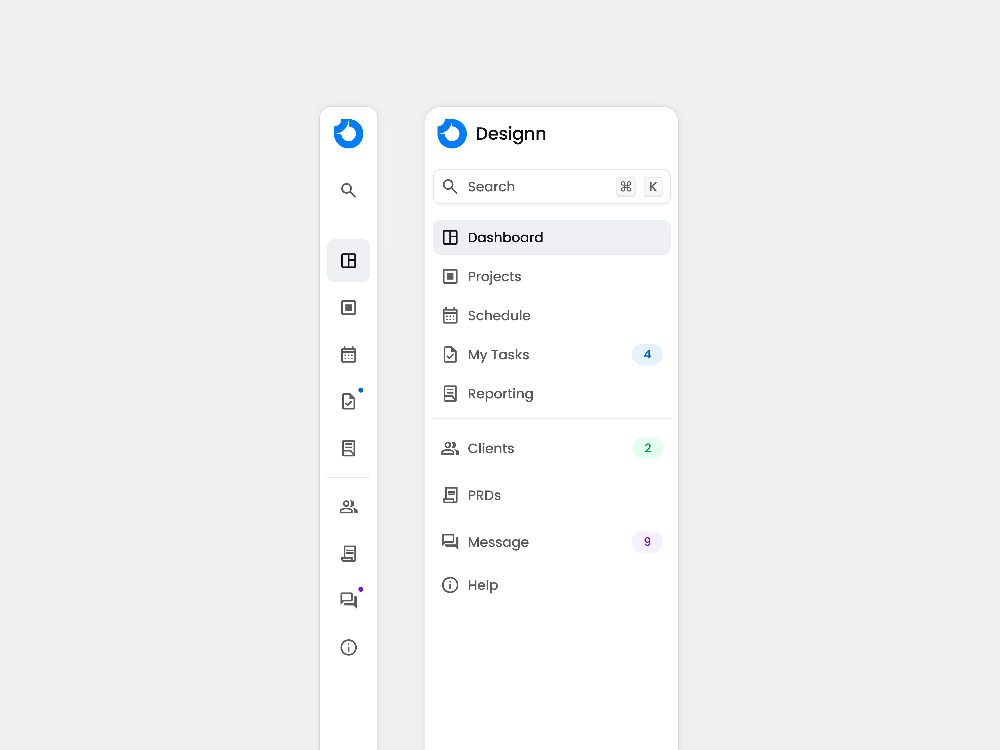
窄轨状态点
窄白轨上图标右下方挂彩色状态点；条目分组排布。对照本项目左轨 9px 状态点与彩点通知。
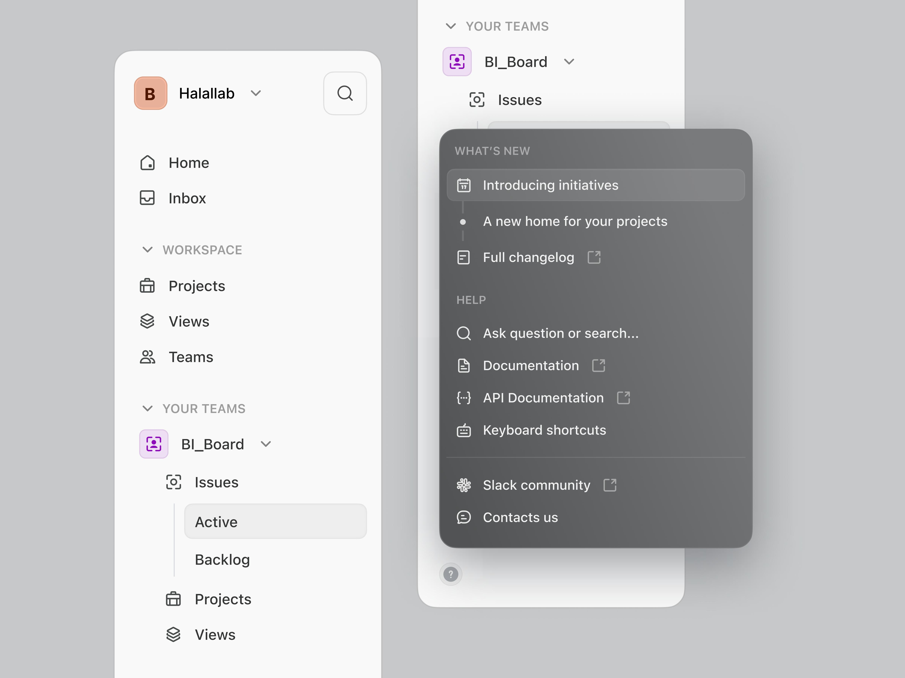
宽轨白卡分组
白底细条目，分组小标题，选中紫色块；头像/搜索落顶。可参考展开态卡片的行距与留白。
E · 白底编辑器横条（Figma 风）
白底圆角条 + 轻投影，彩色首钮标识当前工具，其余灰图标，右侧另起工具簇。适合把编辑器动作从竖列改成横条的备选方向。
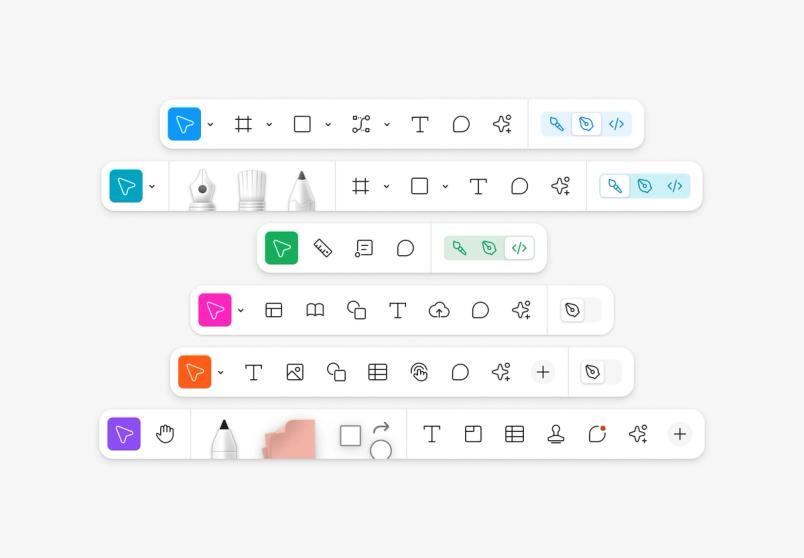
白底圆角条 · 彩色首钮
白底细圆角横条，首钮彩色方块，图标灰描线；右侧浅蓝底工具簇。选中靠首钮色块 + 字形，不靠整圈描边。
对照本项目规范 · 取舍结论
可直接采纳到统一方案
- 角区成簇：缩放/底图归右下地图簇，交付归右上，视图/比例尺/署名留左下，不与编辑器工具列混排（A1、A2、C1）。
- 缩放竖排白圆钮：+/- 上下叠放，贴地图右缘（A2）。
- tooltip 侧出气泡：左轨右出、右轨与地图簇左出，墨黑胶囊 11px（B2 已现行）。
- 窄/宽双态与角标：导航轨收起只留图标、展开带文字；未读圆片、状态点复用既有 15px / 9px 口径（D1、D2、D3）。
- 分组小标题与细分隔线：工具族按动作组分段，组间一根 hair 线（B1、D2）。
需调整后再用 / 暂不采纳
- 深色悬浮条：现行是浅色工作台，B 组仅作深色模式储备；启用需配套整套深色令牌，不单改一条工具列。
- 玻璃拟态：毛玻璃模糊、渐变大圆角、彩色光晕偏离 E1 纯色 paper/plane + hair 边口径，C 组只作氛围参考。
- 线条描边图标：参考图多为线性图标；本项目通用族仍走本地 Material Symbols Rounded 实心，例外仅限角色形体/头像/领域图形。
- 彩色大色块首钮：品牌绿全产品只用于选中指示与发送键，不做整钮绿色容器；选中表达沿用左轨绿条 / 右轨绿描边两族分工。
- 强调色：参考图的蓝/橙/紫均替换为品牌绿 `#4A7C59` / `#35624A`，语义色 ok/warn/err 只做文字、状态点、描边。